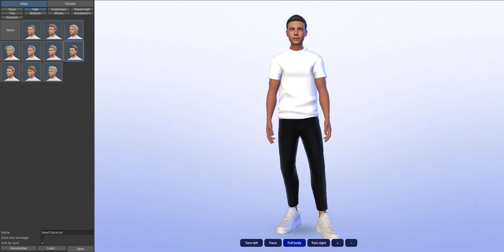
Character creator
Pick a base body, then a face, hair, clothes and colours, and save a character that is ready to drop into a scene. Lip sync can be added on save, so the character can speak its lines straight away.
My team of three owns the Unity side of a medical XR agency: every VR, mixed reality, WebGL and mobile app, and the warehouse we build them from.
I architected it, designed the packages and wrote the first flow controller by hand. Most of the code after that was written by coding agents that I directed. A playable placeholder build of a new client app now takes us about two days from the written concept. It used to take at least a few weeks.
Why we built itHow a scene gets madeBuild and release
Try the platform demo (opens in a new tab)WebGL, runs best on desktop
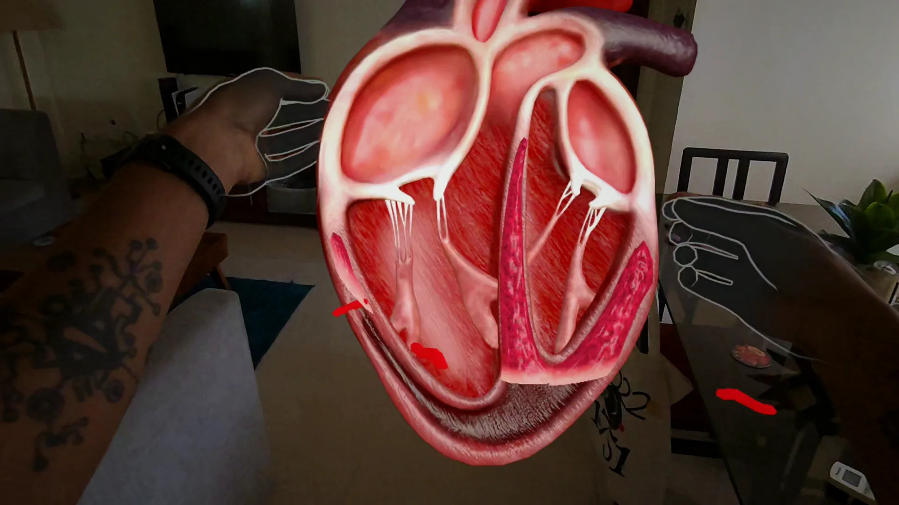
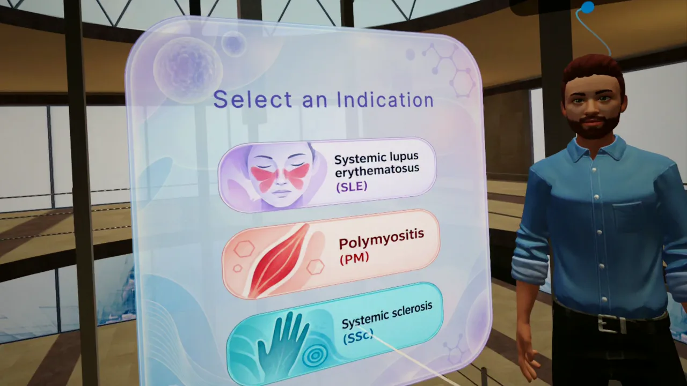

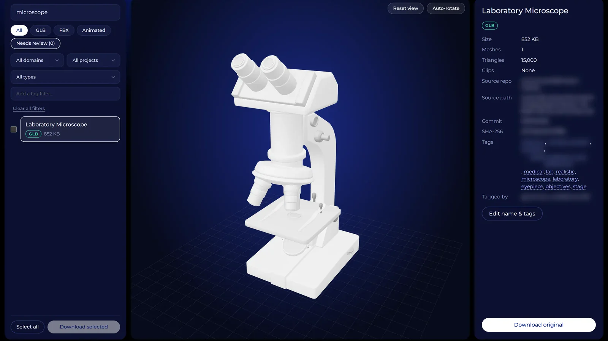
I joined in 2023 as a contractor. The agency needed any Unity or 3D help it could get, and I shipped client VR apps on my own. Product managers and consultants talk to the clients. They brief the Unity team, and I keep asking questions until I understand what the client actually needs.
Today my team owns the whole warehouse and every piece of Unity work the agency does. That is me, a junior developer I hired in 2025 and a QA and design lead I hired when the warehouse work started.
After a year of single-player VR apps for Quest, I noticed I was building the same thing over and over. A character introduces the topic. Animations show how the disease works, healthy and unhealthy. The user does something interactive with it. The character closes with a short monologue.
The disease changed with every client. The loop didn’t. And by then the same apps also had to run in the browser, on Android and on iPhone. So the idea was to stop building apps and build a content factory instead: package every interaction we had, and make a new app by taking what it needs.
One app per client. Reuse meant copying folders into the next project.
The same loop, marked in orange, sitting inside every one of them.
One warehouse of packages, rooms and tools. Each project takes what it needs.
A project starts with a brief. The product manager walks us through what the client wants, and we meet again to talk through how to build it. Then we get a flow document, with sketches if the client needs new animations or a new room, and a Google Sheet with the first round of dialogue.
The freelance 3D artists, the other developer, our QA lead and I go through it together and decide what is new, what we can reuse and what the developers can make themselves. New 3D art takes the longest, and we are usually not directly involved there.
One of us creates the project from the warehouse template, and agents turn the flow document and the dialogue sheet into a first flow graph that we can playtest. We deploy it to the target device, QA tests it and either marks it done or sends it back, and the product manager reviews it with the client.
We split the work by scene. While the client tests one scene, we are already building the next one, or the two developers each take their own scenes.
The product manager briefs us. I ask until I understand it
Sketches where needed, and the first dialogue
Agents build it from the two documents. About a day
On the device, then QA. About a day each
About a week per scene, then the next round
Through 2025 our stories were written in Articy:draft as chains of dialogue fragments. A contractor worked with us for about six months on the plugin inside Articy. In January 2025 I wrote the Unity side: the importer and the driver that played each chain in the scene. Later I took the plugin over and added events for objectives and touch interactions.
It worked, but Articy needed its own bridge into Unity, and that was a lot of work that didn’t need to exist. I said all through 2025 that Articy was outdated and that we could build our own tools. The answer that year was to stay with it, so I kept going and got the automated warehouse idea to maybe 30% on top of it.
In early 2026 the decision changed. I pitched the product manager and the onsite team a plan: our team of three, working with coding agents, builds its own system in a few months. They agreed, and the first client app on it shipped in April. Around the same time I asked for an experienced software architect to be hired, because I had never held that role myself.
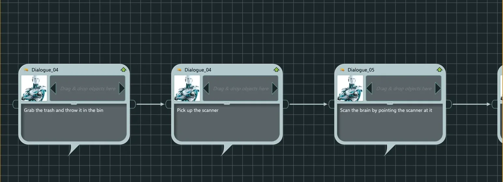
In February 2026 I was rebuilding the CAR-T app on XR Interaction Toolkit. I had already split every scene into Moments, where you wait for something to finish, and Actions, where you wait for the user. So I wrote a flow controller by hand in C# with UniTask and used that app to prove the idea. A developer listed the steps of a scene in order, and the controller could skip a step or start from any step. Testing the end of a long scene no longer meant playing through the start.
Then I took one working scene from that controller and gave it to a coding agent as the example. It built a visual flow graph editor in Unity from it, with a runner and a debugger that shows which block is active.
Once agents could edit graphs, they could also write them. Today a developer hands an agent the flow document and the dialogue sheet. The agent builds the whole placeholder app without anyone opening Unity: it pulls rooms from the scene importer, models from the asset library, a character from the character creator, and interactions and platform support from our packages.
A designer could edit graphs by hand too, but we don’t have one on the team. Developers do most of it. Our product managers have tried it on their own projects, not on a client build yet, mostly because the document-to-graph route works well enough.
Moment waits for something to finish: a voice line, an animation, a timelineAction waits for a user event from the interaction packages: a grab, a touch, a scan
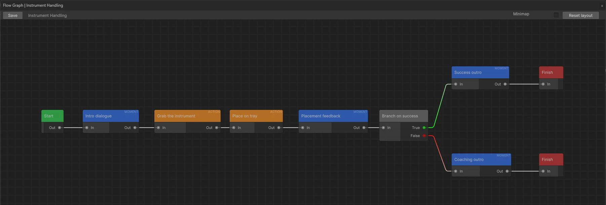
The same task from the demo in a desktop browser, on a phone and in a headset. Nobody wrote it three times. The prompt changes to click, tap or point with a controller ray depending on where it runs.
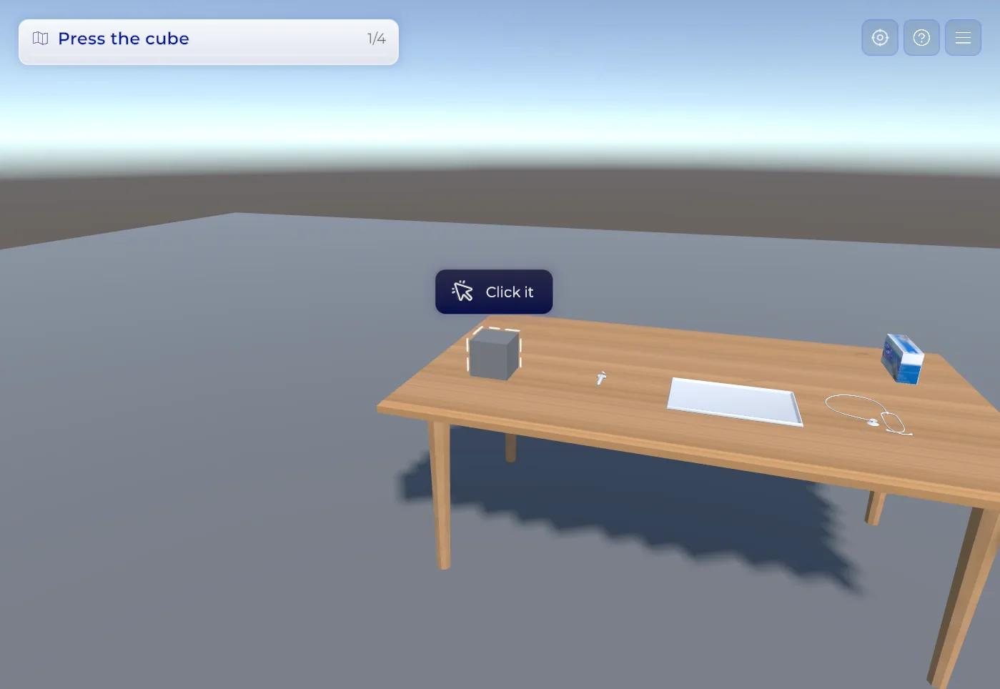
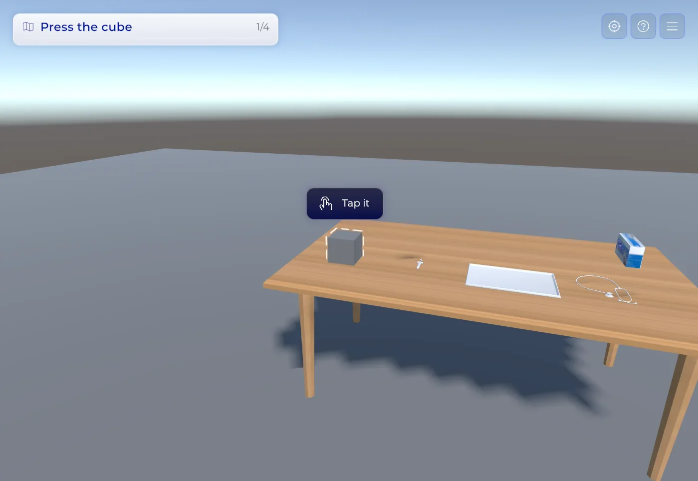
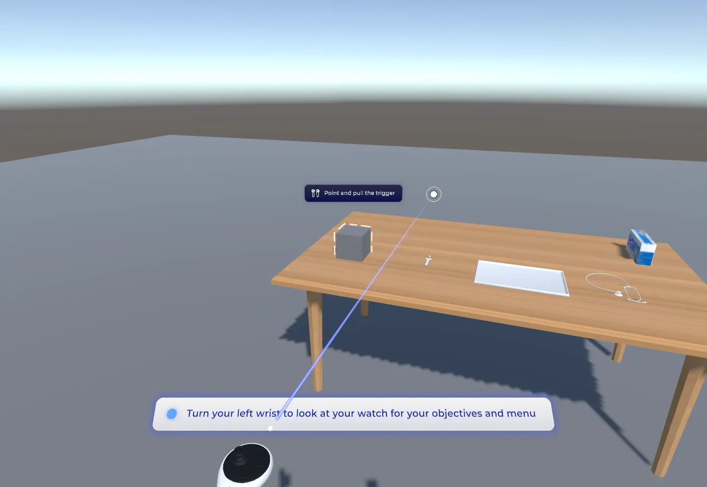
Every block in a graph is an async step on UniTask. It does its work, waits as long as it needs, and returns the output port the flow should follow. The runner walks the graph like that, branches and nested sub-flows included, with no coroutines.
Most blocks wait on the user or the scene: until the user teleports to a marker, until a Unity event fires, until the thumbstick turns, until an animation reaches a set point. Others play dialogue in time with animation, fade audio or fly an avatar along a path. The idle timeout in the Amyloidosis app, where the story moves on after a minute without input, is one of these waits.
One cancellation token runs through the whole flow. Skipping, leaving the scene or holding the flow in the debugger cancels it, so every step has to pass the token to its waits and clean up what it registered. Text and voice for the active language load the same way, without blocking a frame. All of it runs in WebGL too.
All our early apps used the Meta SDK. Its building blocks made prototyping fast. But if we wanted one content factory for Quest, phones, the browser and whatever headset comes next, we needed an open toolkit and no lock-in to one device maker. We moved to OpenXR and XR Interaction Toolkit.
The price was hand tracking. Meta’s hand grab is very good: the poses, the animation, the accuracy. The toolkit is built around a pinch, and its pose detection wasn’t accurate enough for our content. We spent a lot of time on our own finger checks, and they took two tries. The first version needed the thumb, index and little finger to curl toward the object, which locked out anyone who holds things differently. The one we shipped only checks the thumb and index finger.
Our QA lead tested it on headsets. Because agents were already working in the project, we also had them run grab gestures in Unity’s XR simulator through our CI test package, in as many ways as they could think of to make it fail. Grab failures became rare, down to a small fraction of attempts. That is my observation, not a number I can show: the test runs contain client data.
Deadlines still win sometimes. The Amyloidosis app in September 2026 used the Meta SDK’s standard hand grab, because there was no time to bring our own hands up to it for that build. The flow and the other interactions came from the warehouse.
The browser had its own problems. One web build ran out of memory in Safari on an iPhone 13. A 384 MB initial heap and remote Addressables, which keep the first download under 90 MiB, fixed it.
| Platform | Controllers | Hands | Touch | Mouse and keyboard | Gyro look |
|---|---|---|---|---|---|
| Meta Quest, VR | Yes | Yes | No | No | No |
| Quest 3, passthroughAmyloidosis app, Meta SDK hand grab | No | Supported in this app | No | No | No |
| Android phone | No | No | Yes | No | Yes |
| iPhone and iPad | No | No | Yes | No | Yes |
| WebGL, desktop browser | No | No | No | Yes | No |
| WebGL, phone browserGyro falls back to drag | No | No | Yes | No | Yes |
We wrote dialogue in an Excel sheet or a Word document and generated each line by hand in the ElevenLabs dashboard. When the client wanted changes, which in medical content is every round, they took their time editing the whole file and sent us a new one. Then we went through it line by line, regenerated what had changed and added the clips to Unity again. This pipeline was very messy.
So I built a tool for it, on my own initiative. It is one Google Sheet with an Apps Script. Every line has a key, its context, the scene and project it belongs to, the language, an approval status and the voice to use. The client reviews and approves lines right there, because in a medical context every line has to be approved. Once a batch is ready, the script generates all the audio in one go. Our Unity window imports the table and the audio by dialogue key and language, and the dialogue system plays whatever line it is asked for.
Generating a project’s audio went from hours to a couple of minutes. A changed line is two buttons now, regenerate and import, and a few seconds. We are moving voice generation to a local model next, so it will cost nothing.

A lot of the time saved isn’t in the code at all. It is in not rebuilding a room, a heart model or a character that someone already made two projects ago.
This was the first tool that really saved us time. Every room we ever built sits in one GitHub repository as a Unity package, and the importer brings any of them into a new project from inside Unity.
The previews were made by agents. They spawned cameras in each scene, took screenshots from set angles and from points of interest, uploaded them and tagged the scene.
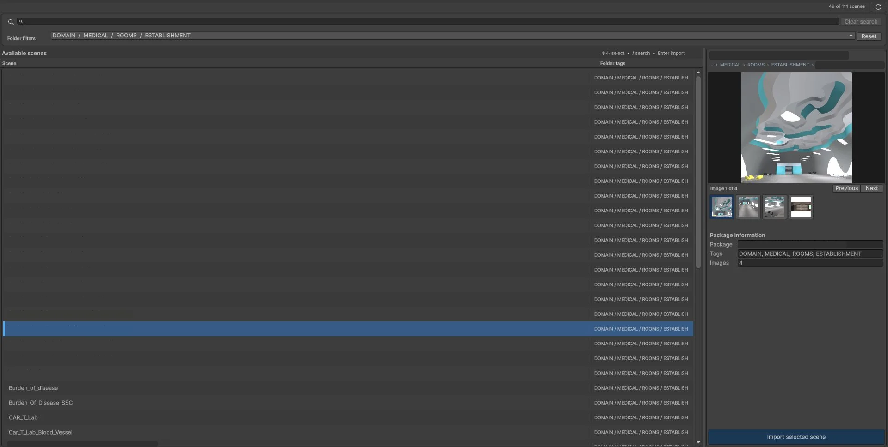
Every night a GitHub Actions job looks at the repositories that changed in the last 14 days and finds new FBX and GLB models. It reads a branch again only when its head moved, spots duplicates by content hash and recognises Git LFS files from their pointers, so nothing gets cloned.
Each new model gets a temporary tag from its repository and project. Blender renders it, a vision model suggests tags, and people correct names and tags from the browser or from Unity. Both write back to the same catalogue.
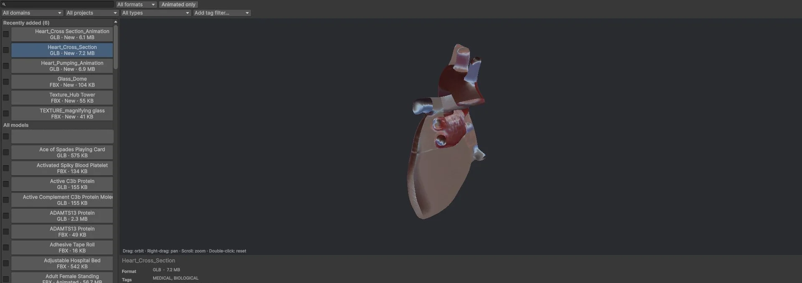
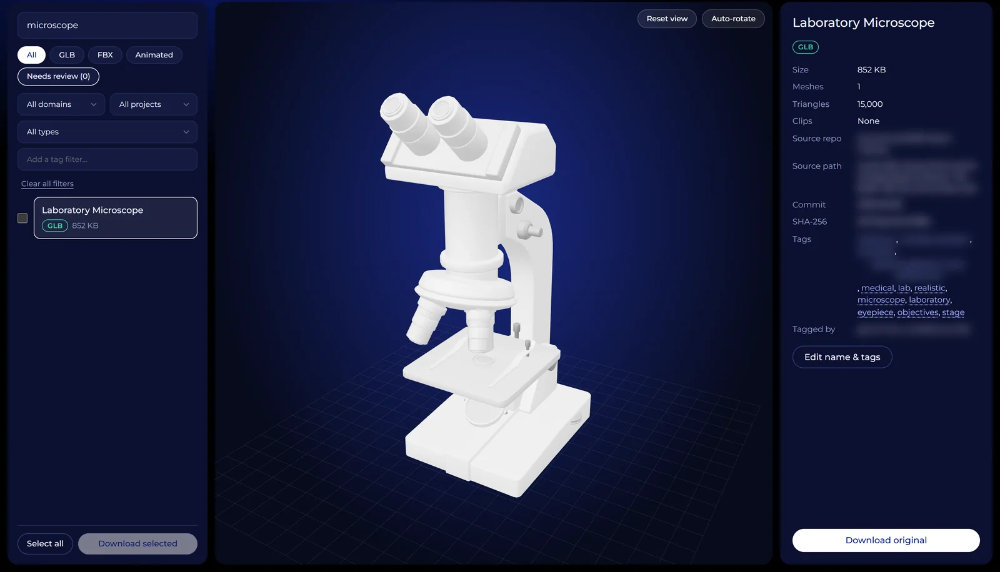

Pick a base body, then a face, hair, clothes and colours, and save a character that is ready to drop into a scene. Lip sync can be added on save, so the character can speak its lines straight away.
Projects install the warehouse as packages. The junior developer came up with the idea of our own package manager, so that once a project has Core, it can install and update everything else from one window. We built it together.
Getting the downloads small took four tries.
Installing one package through a Git URL downloaded the entire repository, copied out the one package and threw the rest away.
We stripped the project files into another branch and kept only the packages. Every install still pulled all of them, and it got worse as we added more.
Tarballs installed quickly. But each update added more release files, the repository kept growing, and installing from a downloaded file or a URL was awkward to manage locally.
When anyone pushes a change to a package on main, a workflow I wrote updates that package’s own branch. Our package manager or Unity’s installs just that branch.
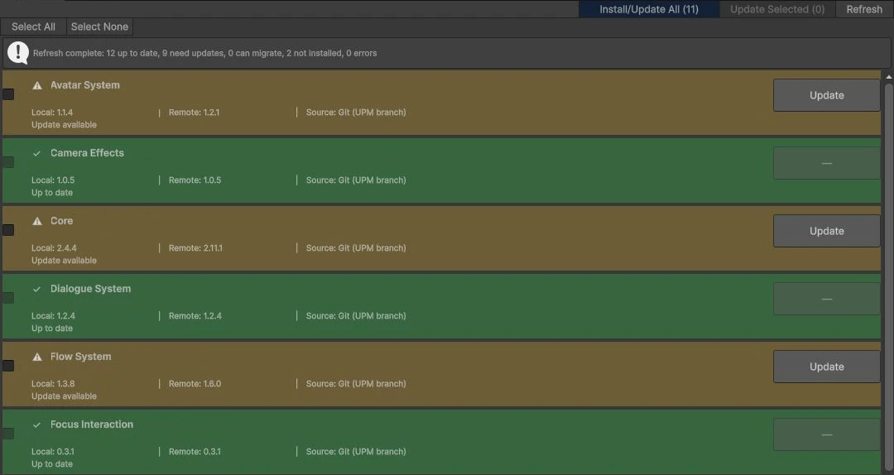
Before the per-package branches, installing one package fetched the whole 438 MB mirror. Core alone is now a 3.2 MB fetch.
Content at the top: flow graphs, dialogue sheets, rooms, models and character recipes. The editor tools make that content. Runtime packages play it, on top of a Core package that owns devices and input. The platform layer at the bottom turns one project into four builds.
An automated check enforces the direction. The flow runtime can use Core’s input contracts. If Core ever reached back up into the flow runtime, the check would fail.
The first automated Quest build came in December 2025, for a hospital VR project. The CAR-T app was the first to move from the Meta SDK to XR Interaction Toolkit. I tried migrating it in place, and it kept breaking every interaction, because almost nothing carried over. Since I knew the content and we wanted two new diseases in it anyway, I started a fresh project instead. The rebuild took four weeks, while I was building the packages and the flow controller at the same time. The original had taken about eight months. I wrote a migration guide along the way.
I used to review the code by hand. Since February 2026 automated checks on every pull request do that, and I still look over the junior developer’s work informally.
Docs and version checked
Each package to its own install branch
The project template updates itself
One generated branch per target
Hooks on the developer’s machine stop a push to main when a package’s documentation or version number doesn’t match its code. The same check runs on every pull request and blocks the merge.
After each publish, a workflow updates the project template: it adds any new package and points every package at the new version. New client projects start from the template, so nobody edits a manifest by hand.
Tests and the platform-settings lint live in the project repositories, because that is where the scenes and settings are. Since September 2026 a test package also lets coding agents play through a flow in the Unity editor with real input, mouse and keyboard, controllers or hands, and check each step.
Quest, Android, iOS and WebGL need different project settings, and they conflict on one branch. A workflow generates one branch per platform from the committed settings and fails if anything else changed. Projects switch it on when they need it.
Device builds started on Unity Cloud Build in December 2025 and moved to our own shared pipeline in July 2026. It signs iOS builds for TestFlight and publishes WebGL builds to a hosted page.

At one point we had 23 packages across many projects, and the documentation had drifted away from the code. Since April 2026 a pull request can’t merge until the README and manual of every changed package match the code.
A script fixes version numbers, dependency tables and links. The written explanations are updated by a coding agent that works only from the code.
At first a bot bumped the version of every changed package on each sync, even when nothing important had changed. In July 2026 we removed that. Developers bump versions on purpose now, and the docs gate checks they did. In October 2026 the 23 packages were merged into nine, and the package manager started asking for confirmation before a major update.
On the development side we were two developers, and I’d put the split at about 80-20. The whole warehouse was built with coding agents. My part was mostly architecture, deciding what the packages are and how they fit together, and steering the agents until the result was right.
None of it is frozen. Once we ship a behaviour it doesn’t stay that way: we keep changing interactions as client projects need them.
Since 2025 we have shipped at least seven client projects from the warehouse: four on the Articy-era version and three on the new system since April 2026. Counting everything since I started in 2023, it is more than fifteen. Both numbers are from memory.
This month we finished a version with shared branding and themes, standard start and exit menus, and the same visual and audio feedback for every interaction. Every new project starts from it. No client app has shipped on this exact version yet, but the demo below runs on it.
Try the platform demo (opens in a new tab)WebGL, runs best on desktop
Two of the apps built along the way are in the healthcare deep dive: the CAR-T rebuild, where the flow controller was born, and the Amyloidosis booth app.